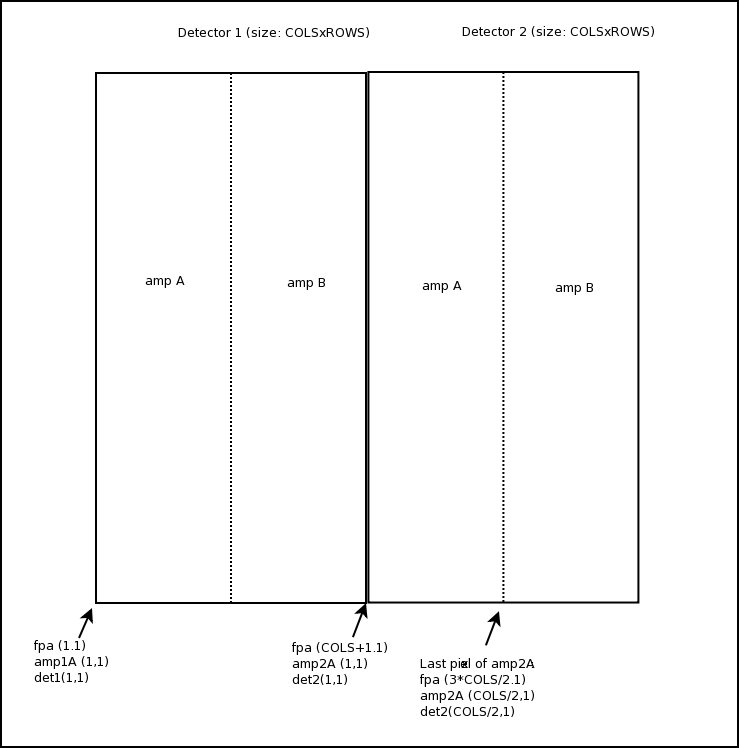
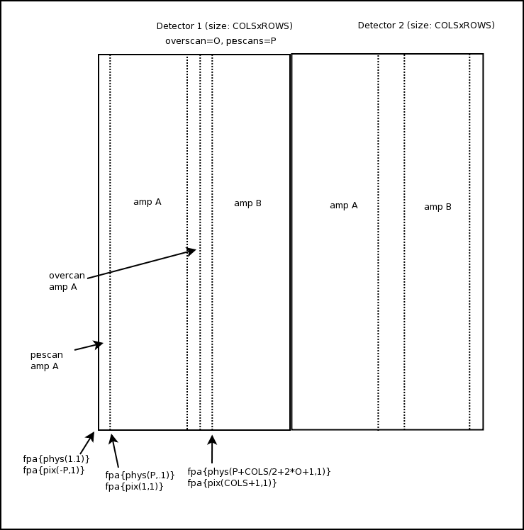
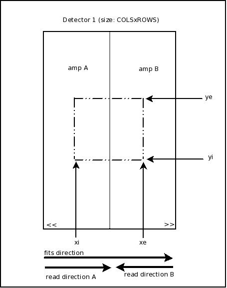
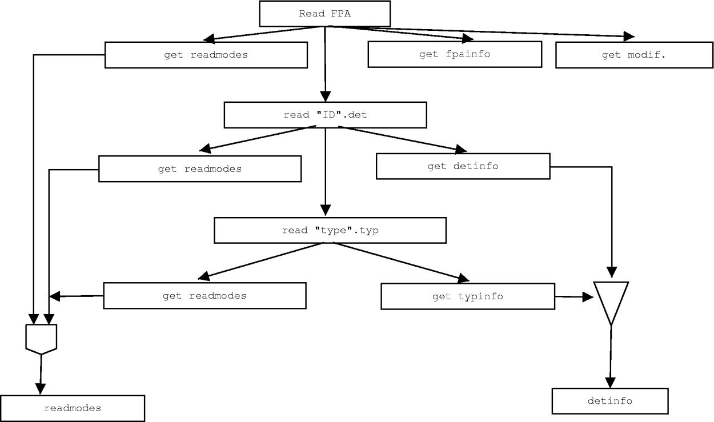

The Detector Database is a set of ascii files that describe the FPA (focal plane array) in a detailed way. Fields include:
- sizes per amplifer, as well as total sizes in either direction (columns
and rows), including any "modifier" to the actual data area (like overscan,
prescans, etc)
- Binning, ROI
- Manufacturer, detector information (like serial number, type, manufacturer's and user-measured parameters, etc)
- All the above information is per-readout mode. If an FPA has more than one readout
mode, then all the above information will change accordingly depending on
the selected one
The GEOM module uses these information in order to calculate the
size/information of the images that will be generated. This information
is normally kept separated from the GEOM module itself so we avoid
having to "update" the whole GEOM module simply because we are adding a
new FPA.
New files are created when a new FPA needs to be described.
We will first describe each directory/file type, and at the end we will
describe how all these fields are linked toguether in order to have a
comprehensive vision of the FPA
Description Files.
Inside the DET_DATABASE there are
5 directories:
FPA: This files must have an .fpa extension. Describes the basics of the
FPA itself.
TYPES: .typ extension. This files describes the diferent types of detectors
(generic models). 1file per detector type
DETECTORS: .det extension. This files describes the actual detector (the
physical one, with an specific serial number) that will be used.
READMODES: .rdm extension. Here diferent types of readmodes can be defined,
according to the amplifier position, etc.
MODIFIERS: .mod extension. Here are defined diferent types of extra-data
sections, like "overscan", "prescan", etc.
1.-FPA
Describes the FPA itself. The name of the FPA will be the name of the
.fpa file (for example, KIRMOS.fpa for the FPA that will be called
KIRMOS)
The genarl Layout is:
[INFO]
INFO1=value1
..... INFON=valueN
/*basic FPA info, like mount design type, cabling, dates,
etc. ANY key=value pair can be added. This is the info available
for the headers through the GEOM template, using "fpainfo
<info>"*/
/*Information for each detector in the FPA*/
/*the ID describes the detector ID, as usually <type>_<serial
number>. The ID used is important, because it will use this name to
search for the information of the detector*/
/*POSITION describes the lower-left corner that the detector ocuppies
on the FPA, using as reference the lower-left corner of the FPA as
(1,1). It can use the reserved keywords "cols" and/or "rows", meaning
"whatever size the detector is". This is recommended rather than using
direct numbers, because the expression will be still be valid if the
user changes the detector size on the fly -or if bins the array*/ /*Any other key different from above will be added to the particular detector information -same effect as adding it*/ /*directly
on the INFO section of the detector file (see below). If the info here
uses the reserved keywords "cols" and/or "rows" it is assumed to be a
numerical expression and it is evaluated. The key can also specify a
numerical expression to be evaluated. See below, on the DETECTORS
section formore information on this.*/
/*The readmode describes how the FPA can be read. This can also state: */ /*none: that particular detector will NOT BE READ, so it will be skipped in that readmode*/ /*<det_readmode>_discarded>: If the key "_discarded" is appended to the readmode, then it is assumed that*/ /*this detector will be read,with teh specified readmode, but the data will be discarded (not written to disk)*/ /*"type" can be: interleaved: the detector will be read in an interleaved way:
det1_pix1 det2_pix1 ... detN_pix1 det1_pix2 .... ordered: the detector will be completelly
read in order: det1_pix1 det1_pix2 .... det1_pixZ det2_pix1 ....*/
/* Interleaved is the most usual way.*/
/*The detector readmodes says the type of readout that will be performed per
chip. See the TYPES and DETECTOR sections.
/*Note that the readmodes is a function of both detector type and
FPA (amount of channels available on the fan-out board, for
example). */
/*The listed readmodes must be defined for the particular detector*/
[MODIFIERS] order='"modifier1modifier2"
/*modifiers supported by the FPA. All the modifiers must be defined on the MODIFIERS directory*/
/*the modifiers will be added on the order specified, as "modifier1 <data> modifier2"
/*coordsorig isoptional
entry that specifies an offset to be given to all the final detector
coordinates. This has only effect in the final image headers, and not
in the actual geometry (data). The default value (if not stated) is
(1,1). This has the same effect as issuing the "SET offcoords
<xoff> <yoff>" to the Geometry module /*totfpasize
is an optional entry that specifies the total size of the FPA. If not
stated, the total size of the fpa will be the calculated maximum size
according to the geometry + the coordinates offsets. This is basically
assuming that the current FPA (described) will fit into a bigger FPA.
If the ley totfpasize is specified, then that one is assumed to be the
size of the bigger FPA. This has effects only on the headers, not in
any data part*/
Example: a) description of a simple Site 2K ccd imager (file P60.fpa)
[INFO]
Mount="Dani Guzman, October 2002, 4 ch fan-out board, serial 201"
Controller="SDSU, generation III"
Software="ArcVIEW, version 3.2"
/* for example, if the MOUNT information is desired in the headers,
then the GEOM template should say somewhere: MOUNT = 'fpainfo
Mount' */
/*The readmode specified as leftdet assumes that the right detector will NOT be read from the controller*/ /*The
readmode specified as discright assumes that the right detector will be
read from the controller in quad mode, but the data will be discarded*/ /*In both cases the result will be the same: only the left detector data on disk*/
2.-TYPES
This directory has information on the type of detectors
Each ".typ" file describes a particular kind of detector (model), like Hawaii-2.typ,
or Site424.typ. So it describes a generic "kind" of detectors.
/*CHIP general info*/
/*mandatory fields are only Name and Format, because the will be used internally*/
/* other information can be added, like manufacturer, model name,
Format, technical specifications (like QE, Dark Current, etc) as specified by
the manufacturer*/
/*After that, every amplifier on the chip must be described, as
position, size, where the amplifier is respect to the lower-left
corner, etc. This can be done directly here or, most usual, call some
specific(s) readmodes, which describe the particular detector. See the
READMODES section*/
/*this are all the readmodes
available for this device; this does not means that these are all the
readmodes available for the FPA who is using it; for this to happen it
must be defined here (as part of the possible read modes for the
detector), and also defined on the FPA readmodes itself.*/
3.- DETECTORS
In these directory there is a description of the specific devices to be
handled. This means, the specific, phisycal device to be used (specific
serial number), of a certain defined type
There is one ".det" file per detector being described. The "detector" file
is then describing a unique, physical chip which exists (it has a serial number).
The name of the file is the ID for the detector specified in the FPA entry.
[INFO]
type = <type>
info1=value1
...
infoN=valueN | _evaluate_ <expression>
/*This information specific
on this particular device. The only REQUIERED information is the type of
device*/
/*<type> must correspond to a defined detector type under TYPE.*/
/*By specifying a device type, the detector being described will inherit
all the information of the correrspondent type. Any repeated keyword on the
info field will imply an override of the inherited information. Any new key
will be added to the inherited one.
For example, if in the "TYPE" description it specifies
"dark_current= 0.5 e-/pix/sec", but in the specific device it says
"dark_current = 0.8 e-/pix/sec",
then in the info field will appear just the last one (assuming that
this
was the value actually measured for this device)*/ /* _evaluate_ is a special (reserved key) that asks to evaluate the following mathematical expression*/ /*expression is: <exp1> <op1> <exp2> <op2> ... where: expN can be: - a direct numerical value. Example: 42 - an enviromental variable. Example: ${MYVAR}
- a command line argument.
Example: $ARG(-myval) (assuming at startup it was passed "..-myval 31" - an internal database variable value. Example: dbs (exptime) - another key in the same INFO section. Example: info (MYKEY) opM can be:
addition (+), sustraction (-),
multiplication (*), division (/), logarithm (log), exponent (^) Example: CR1 = 2 CR2 = 3 CRPIX1 = _evaluate_ info(CR1) * dbs (detcols) /*would be evaluated as 2*(internal "detcols") value*/ CRPIX2 = _evaluate_ info(CR2) * dbs (detrows)
/*The [READMODES] entry is optional here; the device will inherit the readmodes (amplifers)
described for his type, but this can be overriden too if some readmode is
specified here (suposing, for example, that the device has a damaged amplifier,
some of the generic readmodes will not be available for this particular device)*/
Example: description for the Site 424 device, serial number 122 (Site424_1.det)
/*all the no specified
keywords that are present on the TYPE will be inherited here, so at the
end, in the software the info available for this device Site424_122)
will look like:
type=Site424, SerialNumbr=122, Grade=Science, ReadNoise=2.4e-, Format=2048x2048, Manufacturer=SITE, Pixel_Size=15um, OpTemp=150K
Note that ReadNoise here was overriden*/
/*since no READMODE was specified here, this device will show available all the readmodes defined for the type Site424
4.- READMODES
This directory have only definitions of readmodes; this is, diferent
"topologies" to read out the detector. Each readmode specify the
geometry in an amplifier to amplifier basis.
Each file describes only 1 read mode.
The fields described for each amplifier are:
coords: coordinates of the amplifier respect to the lower-left corner of the detector (lower-left is (1,1)) format:
size of the amplifier, as (xsizeXysize). The size can be relative to
the global variable "cols" and /or "rows". These variables will contain
the total size of the detector in x (cols) and y (rows) type: type
of amplifier. The "type" is where the actual output amplifier (where
the data is read) is located respect to the amplifier data area. The
type can be
LL: Lower Left. The
amplifier is located at the lower left corner of the amplifier area
LR: Lower Right
UL: Upper Left
UR: Upper right
as an example, the classical "quad
readout" CCD has one LL, one LR, one UL and one UR amplifiers. rotated:
says if the amplifier is rotated respect to the FPA origin. The only
supported rotations are multiples of 90 degrees: 0 | 90 | 180 | 270 flipped: says if the amplifier is flipped: none | horizontal | vertical
It is important to note that in reality every amplifier can be
described as a LL which is rotated or flipped. For example, a LR
amplifier is a horizontally flipped LL. The definition of the four
types, however, helps speeding up the unscrambling, since we avoid
flipping and or rotating unless it is strictly necessary.
The description is then a series of entries (one per amplifier) with the correspondent description
/*the first amplifier is at the lower-left corner of the
amplifier, and the size is "cols/2" in X and "rows" in Y. If the
detector that called this readmode file is a 2048x2048 (Like the
Site of out example), then "cols" will be 2048 and
"rows: also 2048. The amplifier size will be then 1024x2048. It is not rotated neither flipped. */
/*the second amplifier is located at (cols/2 + 1, 1), which would be
(2049,1) in our example (half of the detector in X), with the same size
as the firs, and also not rotated neither flipped*/
5.- MODIFIERS
This directory describes the variables that "modify" the size of the
detector, as described untill now. The modifiers are generally
user-defined variables, like the overscan, or actual phisycal
quantities, like the prescan pizels on a CCD or extra-reference columns
in NIR detector.
Each file (extension .mdf) describes only 1 modifier.
The fileds on the definition are:
header:
name to appear on the headers. This is not currently implemented, since
the only header module implemented is the NOA one, that have the names
cleary stated. For future use only. binned: is
this section to be binned when binning is applied? (for example, some
people would prefer not to bin the overscan, some others do) where: where goes this section relative to the data, before or after (an overscan is after, but a prescan is before) add_in: should this extra pixels added in columns or rows comment: comment for the headers. Applies here the same said for "header"
/*The actual size of the modifier is given by the user at "run time", it is not a fixed amount", so it does not appears here*/
/*if a FPA invokes this modifier (like in our example), then it will be binned if a "SET binning xbin ybin" is issued*/
6.- HEADERS This directory contains any custom wcs (geometry keys) for
the header. The wcs file allows to build a custiom way of describing
the geometry on the headers. Panview has incorporated some standard
wcs, as NOAO and NOAO_DES, but using custom files allow to modify the
standar descriptions or build up a completelly new one.
The
files must have an extension "wcs". Any wcs file in this directory will
be available to be used by panview, being set either at boot time or on
the fly.
Before we take aclose look at the files, we will explain a few ideas/concepts behind. coordinates: There are three different sets of coordinates incorporated into the description:
amp: The origin will be referenced to the lower-left corner of the current amplifier det: The origin will be referenced to the lower-left corner of the current detector fpa: The origin will be referenced to the lower-left corner opf the complete fpa
Figure 6.1
shows the diference between these coordinate systems. In this example,
the focal plane has 2 detectors, whith 2 amplifers each. Basically, it
says relative to what we will be counting the positions. "amp" gives an
absolute position relative to the origin of the amplifier, while "det"
gives an absolute position relative to the origin of the detector to
which the amplifier corresponds. "fpa" gives an absolute position
respect to the origin of the complete focal plane. Note that in the
simplest case, when there is 1 detector in the focal plane, and 1
amplifier in the detector, then all three coordinate systems will
coincide

Figure 6.1: diferente coordinate systems (fpa, detand amp)
reference: Having
the coordinate system choosen, the counting of the positions still has
another posibility: do we count in real, total pixels as appear in the
image, including prescans, postscans, etc, or do we just count "data"
pixels,this is, valid pixels on the detector imaging area?. For this,
we have two sets of references:
phys: this is a phisycal reference. Includes all the positions on the file (prescans, data and postscans) pix: counts only the valid "image" pixels of the ccd, not counting the prescans and overscans
So,
the same pixel can have a different position "number" even if we use
the same coordinate system, because we can count up all the pixels, or
only the valid data pixels. Figure 6.2 gives a brief graphical description of this.

Figure 6.2: diferente references (pix, phys)
In
the example of the figure, it is assumed P prescans pixels, COLS/2 data
pixels, and O overscan pixels per amplifer. Each detector has
COLS columns across and two amplifiers.
sections/conventions In
a fits image, teh conventio is to name as pixel 1 p(1,1) as the
pixel that appears on the lower-left corner of the 2D image. The
counting direction fowllows then the columns direction, coming back in
the next line to the starting column location. So, for a an amplifer
that is COLSxROWS in size, (1,1),(2,1),...,(COLS,1),(1,2),(2,2)....,(1,ROWS),(2,ROWS),....(COLS,ROWS)
So the ending pixel is always the upper right corner of the image.
Now
that we have defined both the coordinate systems, the reference
to use for pixels, and the order of the counting, we can describe the
initial and the ending area of
our custom section. Each pixel on the image (data or
other) has associated with it 6 "positions", depending on the
coordinate system and the reference to be used. For each individual
pixel p we have three coordinates systems and two references in each.
Since the image is a 2D array, each pixel p has also an X and a Y
coordinate. The geometric description uses then an starting pixel and
an ending pixel in each direction. In this way, we describe a square
area on the detector, as shown in Figure 6.3

Figura 6.3: order and sections descriptions
The
areas are always described using the initial point and the ending point
considering the fits order shown in the figure (from left to right). To
separate the two point son the same direction we use ":" and to
separate axis direction, we use ",". The section shown in Figure 6.3
would be described then as (xi:xe,yi:ye)
readorder The
direction in whuch the pixels are actually read may or may not
couincide with the fits convention order (from left to right, bottom to
top). In Figure 6.3 we can see that the readout order of amplifier A
coincide with the fits convention, while the read order of amplifier B
is opposite. This may be relevant, in some cases to the description. We
already established that the initial:ending areas are always using the
fits convention (left to right); however, if we use the read direction,
the "initial" value may be bigger than the "ending" value; in other
words, if we use the real, physical firs pixel of amplifer B as the
first pixel ("1"), then this pixe "1" in the x direction corresponds to
the righmost pixel in the line. Here comes then another possible way of
describing the coordinates and reference: using "fits" order or
"readout" order. As an example, if we want to describe the area for amp B shown in the figure 6.3, we could do (example using amplifier coordinates and pixel reference): amp{fits->pix(1:xe,yi:ye)} /*fits order*/ amp {readout->pix(xe:1,yi:ye)} /*readout order*/
So
in our notation we will use, by default, fits reference, but the
readout order can be used by stating so in the notation as shown above.
The usage of "fits->" is optional, since it will ne assumed so if no
"fits" or "readout" appears explicitly.
The last thing to note
is that the complete set could be binned or unbinned, depoending if the
representation will be using binned or unbinned coordinates.
The files
Finally, and having all the concepts explained, we will proceed to the actual file for our description. Each line has a of a fits file template:
where: KEY[{type}]: name
of the key as it will appear on the headers. The directives may or may
not be present. This basically indicate to what type of amplifier this
keyword will be calculated. The "type" of amplifier can be: ALL: To all amplifiers. If no type is present, this applies (default) LEFT: to left amplifiers only RIGHT: to right amplifiers only UPPER: to upper amplifers only LOWER: to lower amplifiers only LL, LR, UL, UR: to lower left, lower right, upper left or upper right amplifiers only (example: TSEC{ALL}) It can also specify if the amplifier ID (AID) or detector ID (DID) should ber appended to the key. For example: TSEC{AID}{ALL},
will imply that will be applied to all amplifiers, and the amplifier ID
will be appended, for example: TSECA, or TSEC21, etc.
binned | unbinned: state if the coordinate system will be using binned or unbinned coordinates
coord: as explained before, fpa, det or amp It can also specify: var: which
means that what follows in the {} is either an internal database
variable (dbs(varname)), an enviromental variable ($MYVAR), a command
line argument (ARG($MYARG)) or an expression to evaluate
(_eval_(2*1000). Example: var {_eval_ dbs(exptime) *1000} / test addroi: special
key that instructs to add all the defined rois automatically, amp-based
(for multifits). Not the ROIs are always defined using data pixels addroifpa: special
key that instructs to add all the defined rois automatically, but
fpa-based (for single fits). Not the ROIs are always defined using data
pixels ref: as explained before: phys or pix
xi, xe, yi, ye: starting
and ending corrdinates in the X and Y direction. This can be numeric
values ("1", "21", etc), numerical expressions ("12+23"), internal
database references ("dbs(inix)" or some spetial, reserved words formed
as follwow: <x | y><pre | data | pos><start | end> where x, y are the direction (cols or rows), pre, data, pos, roi are the type of pixels (predata, data, postdata or Region Of Interest)) start, end mark the starting or ending point of the indicated pixels. For example xdatastart: starting data pixel in the x direction xposend: ending postscan pixel in the x direction yprestart: starting prescan pixel in the y direction xroistart: starting pixel of the defined ROI. This are always "data" pixels
If
the coordinates is "det" by default the "start" and "end" will imply
starting and ending detector coordinates; however, if "amp" is used as
prefix it will use amp reference. See the example below
The
geometry module will replace the correspondent values when evaluationg
the directives. Note that the actual numeric value will depend on both
the coordinate and reference used for the key. For example: assume prescans=10, overscans=50,xdata=1024, ydata=2048, 2 lower amplifers (as figures): amp {pix (xdatastart:xdataend, ydatastart:ydataend)} --> (1:1024,1:2048) amp {phys (xdatastart:xdataend, ydatastart:ydataend)}--> (11:1024,1:2048) amp{phys (xposstart:xposend, ydatastart:ydataend)} --> (1035:2059,1:2048) det {pix (xdatastart:xdataend, ydatastart:ydataend)} --> (1:2048,1:2048) det {pix (xampdatastart:xampdataend, ydatastart:ydataend)} --> ampA: (1:1024,1:2048), ampB:(1025:2048,1:2048)
comment: Any
comment that will be presented in the fits header exactly as typed
here. However, there are a couple of reserved words that can be used.
The geometry moduke will replace the correspondent value: _ampID_: amplifier ID _detID_: detectore ID For example: "postscan section for detector _detID_, amplifier _ampID_" may appear as: "postscan section for detector 2, amplifier A"
So, we define have a group of keywords, in which each line has the format explained. That group wil for the geometry description
But
this is not all. The user can define a diferent set of keywords for
different types of fits files. The set of keys then must have defined
for what type of fits files are meant. The possible fits image typoes
are: MEF: Multiple Extension Files, one amplifier per extension MEDF: Multiple Extension Detector files, one detector per extension SEF: Single file, no extensions
Each "section" name then, muist have one oif the names above.
Finally,
it is possible to specify the "format" in which the sections will
appear. The format indoicates the axis separator, the start<->end
separator, and the "enclosing". The format is specified as: [FORMAT] enclose= <inichar> <endchar> rangesep=<character> axesep=<character>
The default values are: enclose=[ ] rangesep=: axesep=,
An example file will be useful at this point: Example: NOAO.wcs
[MEDF] #multiple detector extensions DETSIZE=var {dbs(fpasize_bin)} /total FPA size TRIMSEC=(bin) det {phys (xdatastart:xdataend, ydatastart:ydataend)} /Good section DATASEC=(bin) det {phys (xdatastart:xdataend, ydatastart:ydataend)} /Data section to display DETSEC=(bin) fpa {pix (xdatastart:xdataend, ydatastart:ydataend)} /Detector display tile CCDSEC=(bin) det {pix (xdatastart:xdataend, ydatastart:ydataend)} /CCD section to display CCDSEC=(bin) det {pix (xdatastart:xdataend, ydatastart:ydataend)} /CCD section t o display TRIMSEC{AID}=(bin) det {phys (xampdatastart:xampdataend, yampdatastart:yampdataend)} /Good section from amp _ampID_ DETSEC{AID}=(bin) fpa {pix (xampdatastart:xampdataend, yampdatastart:yampdataend)} /Detector display tile for amp _ampID_ CCDSEC{AID}=(bin) det {pix (xampdatastart:xampdataend, yampdatastart:yampdataend)} /CCD section from amp _ampID_ AMPSEC{AID}=(bin)
det {pix (readout->xampdatastart:xampdataend,
yampdatastart:yampdataend)} /CCD section in read order for amp _ampID_ DATASEC{AID}=(bin) det {phys (xampdatastart:xampdataend, yampdatastart:yampdataend)} /Data section from amp _ampID_ BIASSEC{AID}=(bin) det {phys (xampposstart:xampposend, yampdatastart:yampdataend)} /Overscan from amp _ampID_
[SEF] #single TSEC{AID}{DID}=(bin) fpa {phys (xdatastart:xdataend, ydatastart:ydataend)} /Good section from det _detID_ amp _ampID_ ASEC{AID}{DID}=(bin) fpa {pix (readout->xdatastart:xdataend, ydatastart:ydataend)} /CCD section in read order CSEC{AID}{DID}=(bin) fpa {pix (xdatastart:xdataend, ydatastart:ydataend)} /CCD section from det _detID_ amp _ampID_ BSEC{AID}{DID}=(bin) fpa {phys (xposstart:xposend, ydatastart:ydataend)} /Overscan section from det _detID_ amp _ampID_ DSEC{AID}{DID}=(bin) fpa {phys (xdatastart:xdataend, ydatastart:ydataend)} /Data section from det _detID_ amp _ampID_
Order of Events
Here we will describe coearsly how the information flows to generate the complete picture.
When the DHE module starts, it finds (among its config files), the name of the FPA to be used. The DHE passes that information to the GEOM module, which uses these files to get the calculations.
Having the FPA name:
-> it goes and look in the DET_DATABASE (location defned on the GEOM config file) for the file FPA/<fpaname>.fpa.
Looks inside it and get all the INFO and stores it as "fpainfo".
-> Then looks into the defined detectors, and go looking for them (one by one) to DETECTORS/<detname>.det
-> inside <detname.det> gets all the info (detinfo) for that detector
-> then looks for the detector type ("type" keyword), and goes to TYPES/<type.typ>
-> get all the info (typinfo) for the type,
-> gets all the readout modes supported by that detector type
-> come backs to the detector file, and compare the detinfo with the typinfo, then add them toguether, overriding any typinfo field with the detinfo field if repeated. Then stores this info as "detinfo"
-> if there are readmodes defined on the
"detector" file, keep this ones and take to the trash the ones found on
the "type" file. If no read modes are defined here then keep the type readmodes
-> come back to the fpa file and compare the defined readmodes there
with the ones he has stored, and keep the AND subset of them.
A diagram is presente at the end of this document.
Example: P60.fpa
DHE finds the FPA name to be "P60".
Passes the name to GEOM, who looks into DET_DATABASE/FPA/P60.fpa (see fpa example)
Looking inside, it sees 1 detector, with ID "Site424_122", so it goes look into DETECTORS/Site424_122.det.
Looking inside it finds it to be of type "Site424", so it goes to TYPES/Site424.typ
Extract the information and readmodes for Site424
Merge the Site424.typ info with the Site424_122.det info
Incorporate the Readmodes, replacing the "globals"
for the correspondent size. No readmodes are found on the
Site424_122.det file, so keep the ones of the type file
Compare the readmodes with the ones defined on the FPA: since
the FPA says "left" and "quad", and the detector ones have them both
defined, keep these as the ones "available" for usage.
After all this the GEOM module knows exactly how each detector looks
for each readmode selected (remember that the aparent (virtual) size of
the detector may change when going from single to quad readmode -more
overscan and prescans, for example), and how the FPA looks like,
because it has the position of each detector on the FPA (and the
position of each amplifier inside each deetctor).
Having this information, returns the requested info to the DHE module
(usually total size), and also calculates the image header description
for each readmode, using the specified header module (NOAO).
Every time the user request a binning, roi or modifier change (changing
overscan), the DHE will ask the GEOM module to recalculate the new
size, and the GEOM will also recalculate the new headers description.
The Unscrambler (GUNSC) and Fits (GFITS) modules also get this
information, so they know how to unscramble and write the images to file
As complex as it may look like, this schemes simplifyes the development
process and the independence of the modules. It is not longer work of
the DHE module to know all this, and almost any imaginable topology can
be described in this way, which means that custom-made
unscrambler algorithms are no longer needed. When a new FPA (with a new
topology) is needed, only settig those files is enought to have a
working system in minutes.
The only missing piece yet is to make an automatic program for
generating this files, so the user can use a text-based script or a
graphical interface to generate them without the need of knowing much
details...

figure 1: diagram with the sequence of events when readind an FPA geometry